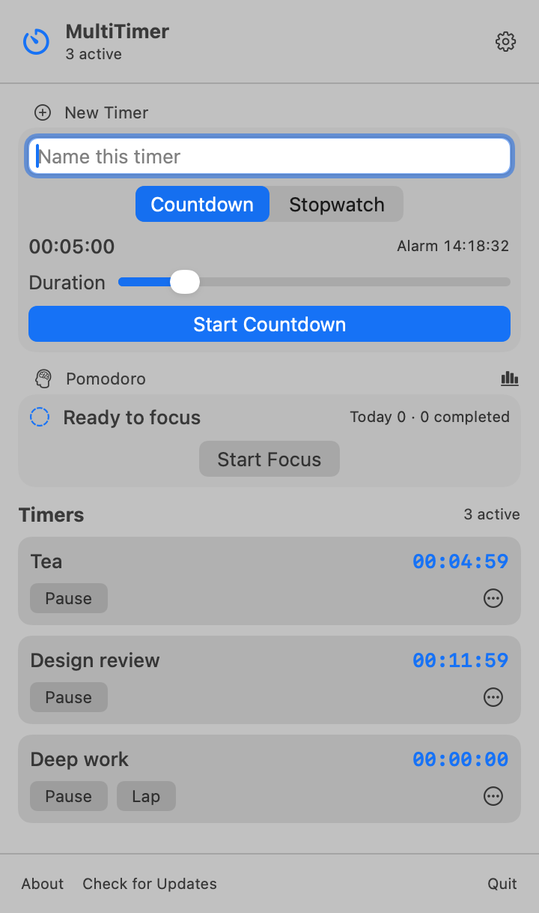
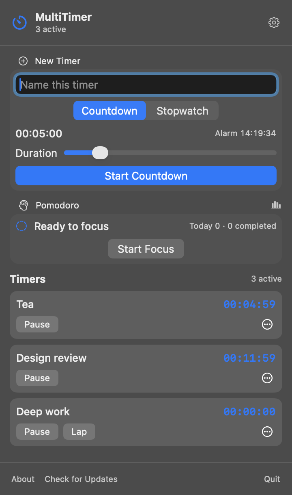

计时器与番茄钟，各有自己的节奏。
倒计时、秒表、番茄钟、设置与统计都在同一个固定宽度面板中管理；24 小时时间线记录每次专注的开始、结束和完成状态。

专心把计时做好
倒计时、秒表、番茄钟、设置与统计都在同一个固定宽度面板中管理；24 小时时间线记录每次专注的开始、结束和完成状态。
原生 AppKit 界面、系统通知和安装来源感知更新。启动时通过 GitHub Release 检查并显示新版特性，由你选择立即更新、稍后提醒或跳过版本。
不需要账户，没有遥测，默认只保存在本机。番茄钟记录只保存开始时间、结束时间和是否完整完成；每日统计由这些记录实时计算。
一天都好看
MultiTimer 自动跟随 macOS 的深浅外观；按钮和计时颜色使用系统强调色。系统是蓝色，它就是蓝色；换成绿色，它也会一起变化。

安装 MultiTimer
打开安装包，将 MultiTimer 拖入“应用程序”文件夹。
下载最新版 macOS Ventura 或更高版本两行命令完成安装，以后也可以通过 Homebrew 直接更新。
$ brew tap EchoForger/tap
$ brew install --cask multi-timer首次打开若被 macOS 拦截，请右键 MultiTimer 并选择“打开”。应用启动后会通过 GitHub Release 检查更新，发现新版时由你确认是否安装；也可通过面板底部的“检查更新”手动检查。